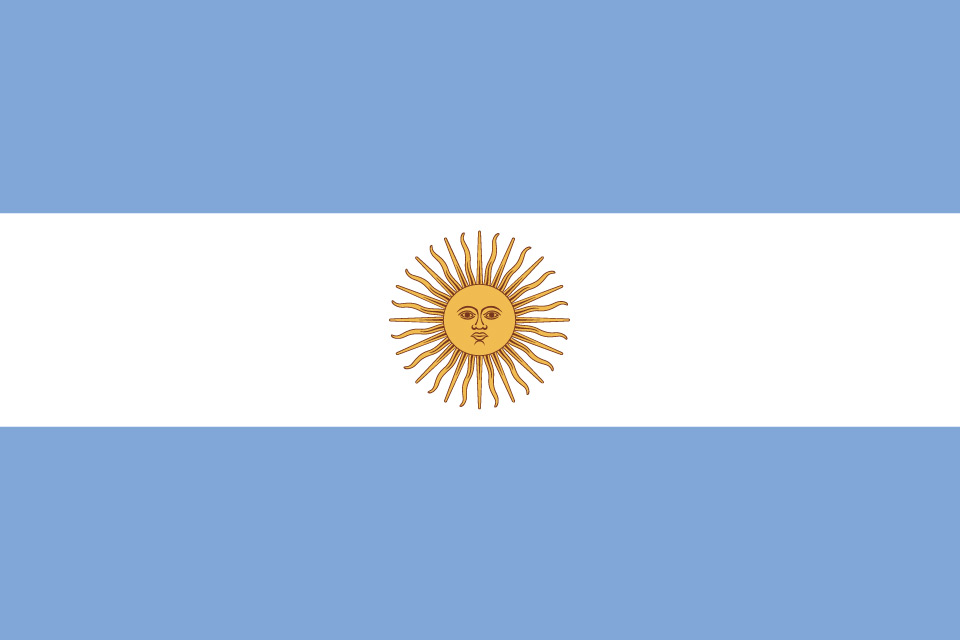

Argentinia
Squad
| Number |
Name |
Club |
Birthdate |
| Goalkeeper |
| 12 |
Franco Armani |
River Plate |
16.10.1986 |
| 23 |
Willy Caballero |
Chelsea FC |
28.09.1981 |
| 1 |
Nahul Guzman |
Unal Tigres |
10.08.1986 |
| Defender |
| 4 |
Cristian Ansaldi |
Torino FC |
20.09.1986 |
| 6 |
Frederico Fazio |
AS Roma |
17.03.1987 |
| 2 |
Gabriel Mercado |
Sevilla FC |
18.03.1987 |
| 17 |
Nicolas Otamendi |
Manchester City |
12.02.1988 |
| 16 |
Marcos Rojo |
Manchester United |
20.03.1990 |
| 3 |
Nico Tagliafico |
AFC Ajax |
31.08.1992 |
| Midfielder |
| 8 |
Marcos Acuna |
Sporting CP |
28.10.1991 |
| 7 |
Ever Banega |
Sevilla FC |
29.06.1986 |
| 5 |
Lucas Biglia |
AC Milan |
30.01.1986 |
| 11 |
Angel Di Maria |
Paris Saint-German |
14.02.1988 |
| 20 |
Giovanni Lo Celso |
Paris Saint-German |
9.04.1996 |
| 14 |
Javier Mascherano |
Hebei China Fortuna |
8.06.1984 |
| 13 |
Maximiliano Mezza |
Independiente |
15.12.1992 |
| 15 |
Enzo Perez |
River Plate |
22.02.1986 |
| 18 |
Eduard Salvio |
Sl Benfica |
13.07.1990 |
| Forward |
| 19 |
Sergio Agüero |
Manchester City |
2.06.1988 |
| 21 |
Paulo Dybala |
Juventus |
15.11.1988 |
| 9 |
Gonzalo Higuain |
Juventus |
10.12.1987 |
| 10 |
Lionel Messi |
FC Barcelona |
24.06.1987 |
| 22 |
Cristian Pavon |
Boca Juniors |
21.01.1996 |
| Manager |
|
Jorge Sampaoli |
|
13.03.1960 |
| Games |
| Date |
Time |
Home |
Away |
| 16.06.18 |
15:00 |
Argentinia |
Iceland |
| 21.06.18 |
20:00 |
Argentinia |
Croatia |
| 26.06.18 |
20:00 |
Nigeria |
Argentinia |